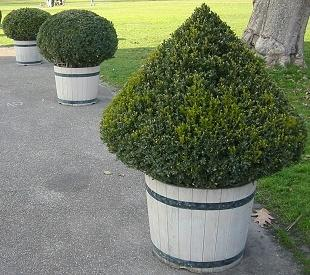

|
| Wie wird der Buchs genutzt?
 | Der Buchs ist eine beliebte Zierpflanze. Oft wird er als Kübelpflanze gehalten.
Er lässt sich leicht in Form schneiden.
Sein Holz ist sehr hart und schwerer als Wasser.
Es eignet sich zur Herstellung von Holzschnitten, Holzblasinstrumenten und Figuren.
|